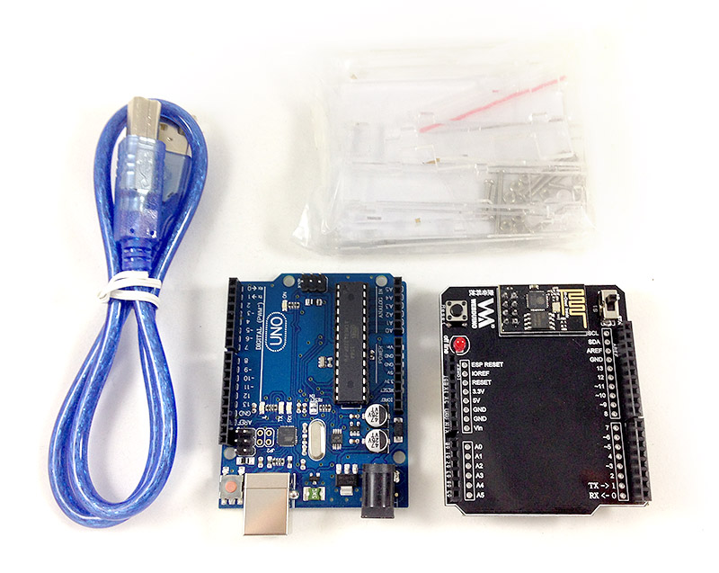
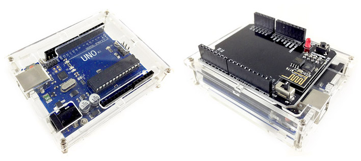

Webduino Fly + Arduino UNO
Arduino UNO + Webduino Fly 是目前市面上最方便的物聯網解決方案，透過 Webduino Fly 的輔助，讓 Arduino UNO 這塊世界上最普及的開發板，立即擁有 Wi-Fi 控制的超能力，此外，Webduino 也將 Arduino 相關的韌體程式釋出，你可以自行燒錄對應的韌體，讓開發板具備獨一無二的功能，展現您與眾不同的創造力！
售價：
新台幣 1,250 元整 ( 已含稅，原價 1,365 元 )
產品內容：
- 1. Webduino Fly ×1
- 2. Arduino UNO R3 相容板 ×1
- 3. USB 傳輸線 ×1
- 4. Arduino UNO 保護殼 ×1 ( 需自行組裝 )

和 Arduino UNO 組裝照片 ( 需自行組裝 )：

Webduino Fly 說明：
- 1. 開關 STA 模式：Arduino 模式 ( 藍牙、序列埠 ) 、Wi-Fi 初始化設定
- 2. 開關 AP 模式：Webduino 模式 ( Wi-Fi )
- 3. 斷線指示燈：Webduino 模式下，若 Wi-Fi 斷線會亮燈
- 4. 按鈕：Reset

初次使用必看：
實作 Webduino Fly 之前，最重要的就是進行初始化設定，初始化設定的目的在於讓 Webduino Fly可以自動上網，請連結至初始化設定教學頁面按照步驟設定，確保可以正常使用。此外，要走 Arduino Firmata 的通訊協定，所以必須「要燒錄具有 Firmata 通訊協定的韌體」，請點選下方網址觀看燒錄步驟與相關設定，讓你的 Arduino UNO 長出 Web 的翅膀，一起遨遊雲端！
1. Webduino Fly 初始化設定教學：https://webduino.io/tutorials/info-04-uno-setup.html
2. Arduino 韌體下載與燒錄教學：https://webduino.io/tutorials/info-07-arduino-ino.html